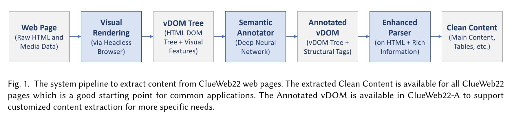

ClueWeb22: 10 Billion Web Documents with Rich Information
Abstract
ClueWeb22, the newest iteration of the ClueWeb line of datasets, provides 10 billion web pages affiliated with rich information. Its design was influenced by the need for a high quality, large scale web corpus to support a range of academic and industry research, for example, in information systems, retrieval-augmented AI systems, and model pretraining. Compared with earlier ClueWeb corpora, the ClueWeb22 corpus is larger, more varied, of higher-quality, and aligned with the document distributions in commercial web search. Besides raw HTML, ClueWeb22 includes rich information about the web pages provided by industry-standard document understanding systems, including the visual representation of pages rendered by a web browser, parsed HTML structure information from a neural network parser, and pre-processed cleaned document text to lower the barrier to entry. Many of these signals have been widely used in industry but are available to the research community for the first time at this scale.
• Super Head: The most popular web pages visited through web search, such as the content pages of Wikipedia, popular news websites, and top domains people visit in their daily life; • Head: The regularly visited part of the web, where most search traffic lands; • Tail: The diverse part of the web still regularly visited by users with specific needs; • Super Tail: The majority of the web discovered by crawlers but barely visited by users. (p. 4)
On average, there are 50+ secondary URLs needed to render one web page. Not only downloading them imposes significant cost, rendering the web page and executing the secondary contents is also non-trivial. It is effectively running an actual web browser. As a result, many open-source web page parsing tools restrict their operations to static HTML, limiting their ability to extract the exact content a web page displays to users. (p. 5)

Semantic Annotation Task is to predict whether a node in the HTML DOM tree belongs to a set of predefined categories. In ClueWeb22 the model uses the following six categories: (1) Title: The title of the document content, which may be different from the HTML <title> tag. (2) Primary Content: The main content of the web page. Formally a piece of text is primary content if it is the main information for visitors to consume. This excludes elements that occur on other pages of the same site, such as headers, footers, and navigation, as well as elements that change with page reloading, e.g., advertisements. In addition, we remove elements that are not the core content, for example, the comment section of a blog site, where the blog is the core content. (3) Heading: The heading of each section in the primary content. (p. 6)
(4) Paragraph: The natural language paragraphs of the primary content. (5) Table: Content tables in the primary content, grouped in tabular format. This is determined by the page presentation to users, regardless their organization in the static HTML or dynamic scripts. (6) List: Content lists in the primary content, grouped in the list format. (p. 7)
(7) Table Row: A row that contains multiple cells in a table. (8) Table Cell: The element storing one content unit in a table. (9) Table Header: The row or column header that contains labels for content in a table. (10) Table Caption: The description or summary of table content. (11) List Item: The element storing one content unit in a list. (12) HTML Title: The page title displayed in the browser tab. (13) Invisible Text: Text that is invisible when rendered in the browser, i.e. those with zero opacity or less than two pixel in both width and height. (p. 7)
The advantage of CommonCrawl is at its scale but not necessary content quality. Our pilot study shows that ClueWeb22-B provides a large amount of high quality text that can be directly used (without any further cleaning) to pretrain language models. (p. 15)
There is no single best definition of web page importance. Nevertheless, the frequency of websites in CommonCrawl is unlikely to be aligned with their frequency of being visited by web search users. For example, it is doubtful web users now spend more time on amazonaws.com than on amazon.com. According to a recent discussion from a CommonCrawl contributor [24], the domain rank of CommonCrawl has around 33% overlap with the general web traffic estimated by DNS providers. In comparison, ClueWeb22 is designed to reflect the distribution of search engine traffic and its top websites align with our intuitions of search user behaviors. (p. 17)
@article{Overwijk_Xiong_Liu_VandenBerg_Callan_2022, title={ClueWeb22: 10 Billion Web Documents with Rich Information}, url={[http://arxiv.org/abs/2211.15848](http://arxiv.org/abs/2211.15848)}, DOI={[10.48550/arXiv.2211.15848](https://doi.org/10.48550/arXiv.2211.15848)}, abstractNote={ClueWeb22, the newest iteration of the ClueWeb line of datasets, provides 10 billion web pages affiliated with rich information. Its design was influenced by the need for a high quality, large scale web corpus to support a range of academic and industry research, for example, in information systems, retrieval-augmented AI systems, and model pretraining. Compared with earlier ClueWeb corpora, the ClueWeb22 corpus is larger, more varied, of higher-quality, and aligned with the document distributions in commercial web search. Besides raw HTML, ClueWeb22 includes rich information about the web pages provided by industry-standard document understanding systems, including the visual representation of pages rendered by a web browser, parsed HTML structure information from a neural network parser, and pre-processed cleaned document text to lower the barrier to entry. Many of these signals have been widely used in industry but are available to the research community for the first time at this scale.}, note={0 citations (Semantic Scholar/arXiv) [2022-11-30] arXiv:2211.15848 [cs]}, number={arXiv:2211.15848}, author={Overwijk, Arnold and Xiong, Chenyan and Liu, Xiao and VandenBerg, Cameron and Callan, Jamie}, year={2022}, month={Nov} }